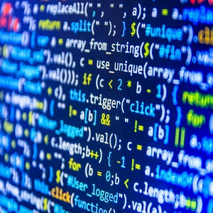

When I was younger, my dream was to become an engineer. I had no idea what an engineer did, but it sounded cool. I remember buying little circuit kits from that brochure in elementary that every kid bought books from. Tinkering around with the beginner circuit boards was one of my favorite hobbies as a kid. I knew that I wanted to make a career in some sort of technological field, but I wasn't sure what to do specifically. When I started attending college, I declared my major as Computer Engineering and I wanted to eventually build my own projects and circuits. After the first year of taking engineering courses, I realized that engineering was not interesting to me anymore. I then decided to switch my focus to Computer Science instead because I still liked working with computers.


I switched majors to Computer Science because at that moment in time I found computer security very interesting. I had no real experience with computer security or how I would even go about creating a career in it. But, computer security was intriguing and mysterious and I wanted to know more. I will eventually take a few courses that will give me more information on computer security so that I can determine if I really want it as my career. As for now, I am trying to broaden my area of interest by taking other Computer Science courses in hopes of finding somehting cool.




I never thought that I would be learning how to code in multiple languages and learning the process of it. To be honest, coding was never the most interesting thing to me. One thing that I learned about writing code is that writing code is really fun when I understand exactly what I am are doing. However, it can be really frustrating when the code does not work and I get stuck because I do not understand the topics fully. However, I still find enjoyment in coding the right way. I am starting to take Software Engineering courses to get experience in different types of coding. In my Software Engineering courses I hope to find a passion for it and maybe even a career in it.
